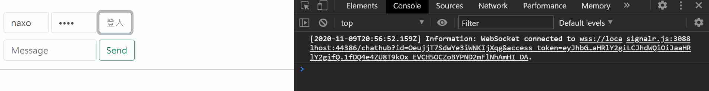

安裝 axios
SignalR 連線驗證的方式是將 token 夾帶於網址參數中發送到伺服器，因此進行 websocket 連線前我們透過 ajax 向伺服器發送帳號密碼索取登入的 Token，我們安裝方便使用 ajax 的 axios 函式庫：
axios 一樣可以透過 LibMan 安裝~
1
2
3
4
|
libman install axios@latest \
-p unpkg \
-d wwwroot/js/axios \
--files dist/axios.min.js
|
在 wwwRoot/index.html 添加對 axios 的引用：
1
|
<script src="./lib/axios/dist/axios.min.js"></script>
|
簡易登入UI
雖然是功能原型，為了讓做出來的頁面不要太粗暴，拿 bootstrap 的 css 來套用一下 UI：
1
2
3
4
5
|
libman install bootstrap@5.0.0-alpha2 \
-p unpkg \
-d wwwroot/lib/bootstrap \
--files dist/js/bootstrap.min.js \
--files dist/css/bootstrap.min.css
|
在 wwwRoot/index.html 添加對 bootstrap css 的引用：
1
|
<script src="./lib/bootstrap/dist/js/bootstrap.min.js"></script>
|
現在將 wwwRoot/index.html 修改如下：
1
2
3
4
5
6
7
8
9
10
11
12
13
14
15
16
17
18
19
20
21
22
23
24
25
26
27
28
29
30
31
32
33
34
35
36
37
38
39
40
41
42
43
44
45
46
47
48
49
50
51
|
<!DOCTYPE html>
<html>
<head>
<meta charset="utf-8" />
<title></title>
<link rel="stylesheet" href="./lib/bootstrap/dist/css/bootstrap.min.css" />
</head>
<body>
<div class="container">
<div class="row g-1 mt-4">
<div class="col-2">
<!-- 使用者名稱輸入框 -->
<input id="userInput" type="text" class="form-control" placeholder="User">
</div>
<div class="col-2">
<!-- 密碼輸入框 -->
<input id="passInput" type="password" class="form-control" placeholder="Password">
</div>
<!-- 登入按鈕 -->
<div class="col-auto">
<button id="loginButton" type="button" class="btn btn-outline-secondary">登入</button>
</div>
</div>
<div class="row g-1 mt-2">
<!-- 訊息輸入框 -->
<div class="col-4">
<input type="text" id="messageInput" class="form-control" placeholder="Message"/>
</div>
<!-- 送出按鈕 -->
<div class="col-auto">
<button id="sendButton" type="button" class="btn btn-outline-success">Send</button>
</div>
</div>
</div>
<div class="row">
<div class="col-12">
<hr />
</div>
</div>
<div class="row">
<div class="col-6">
<!-- 顯示訊息的ul -->
<ul id="messagesList"></ul>
</div>
</div>
<script src="./js/signalr/dist/browser/signalr.js"></script>
<script src="./js/chat.js"></script>
<script src="./lib/bootstrap/dist/js/bootstrap.min.js"></script>
<script src="./lib/axios/dist/axios.min.js"></script>
</body>
</html>
|
修改 Chat.js
官方範例中，SignalR連線是由網址參數傳遞，方法是在 withUrl 的第二個物件參數給一個 accessTokenFactory 回傳 token：
1
2
3
4
|
// Connect, using the token we got.
this.connection = new signalR.HubConnectionBuilder()
.withUrl("/hubs/chat", { accessTokenFactory: () => loginToken })
.build();
|
另外我們需要在取得 Token 之後方能啟動連線，因此將整個 Chat.js 改成這樣：
1
2
3
4
5
6
7
8
9
10
11
12
13
14
15
16
17
18
19
20
21
22
23
24
25
26
27
28
29
30
31
32
33
34
35
36
37
38
39
40
41
42
43
44
45
46
47
48
49
50
51
52
53
54
55
56
57
58
59
60
61
62
63
|
"use strict";
// 從 Dom tree 當中取得送出按鈕、訊息輸入元件
let btnSend = document.getElementById("sendButton");
let messageInput = document.getElementById("messageInput");
// 從 Dom tree 當中取得登入按鈕、使用者名稱輸入、密碼輸入
let userInput = document.getElementById("userInput");
let passInput = document.getElementById("passInput");
let btnLogin = document.getElementById("loginButton");
// 使送出按鈕無法點選，直到登入後 SignalR 連線建立
btnSend.disabled = true;
let access_token="";
// 以 token 起始一個 SignalR 連線，連線到 /chatHub 端點
let connection = new signalR.HubConnectionBuilder().withUrl("/chathub", {
accessTokenFactory: () => access_token
}).build();
// 點擊登入鈕事件
btnLogin.addEventListener("click", async function (event) {
try {
// 取得 token
let data = {
userId: userInput.value,
password: passInput.value
};
let res = await axios.post("./api/Token/signin", data);
access_token = res.data.token
// 起始連線，將送出按鈕啟用
await connection.start()
btnSend.disabled = false;
} catch (err) {
alert("嘗試取得Token建立連線時發生錯誤，詳細資料：" + err.toString() + ";");
}
});
// 註冊連線接收到 ReceiveMessage 時的行為
// 這個行為會呼叫帶有參數 user, message 的回呼函數
connection.on("ReceiveMessage", function (user, message) {
// 將&、<、>取代為相對應的 html code
var msg = message.replace(/&/g, "&").replace(/</g, "<").replace(/>/g, ">");
// 設定顯示文字、新增一個顯示對話的 li dom 插入至 messagesList
var encodedMsg = "[" + user + "] " + msg;
var li = document.createElement("li");
li.textContent = encodedMsg;
document.getElementById("messagesList").appendChild(li);
});
// 設定按下送出訊息的行為
btnSend.addEventListener("click", function (event) {
// 以參數 userInput、messageInput 的值作為參數呼叫 server 端的 SendMessage
connection
.invoke("SendMessage", userInput.value, messageInput.value)
.catch(function (err) {
return console.error(err.toString());
});
// 取消 html 按鈕執行預設行為
event.preventDefault();
});
|
測試
經過如上的設置，已可在登入後啟動 SignalR 連線，完成供參考的聊天室原型：
